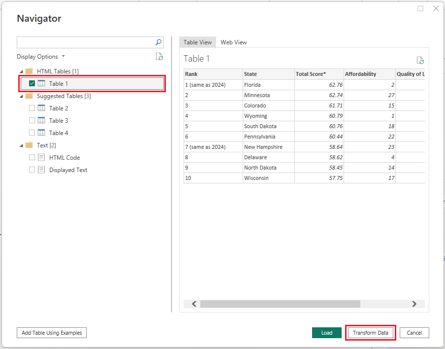
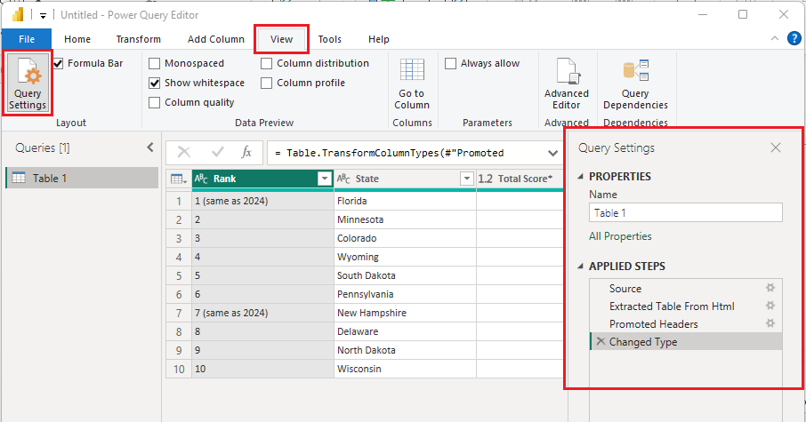
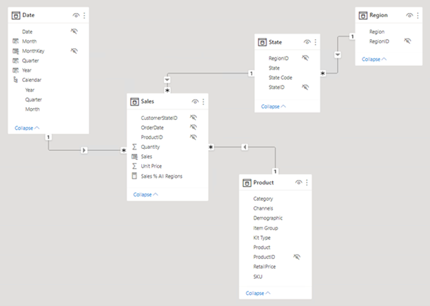
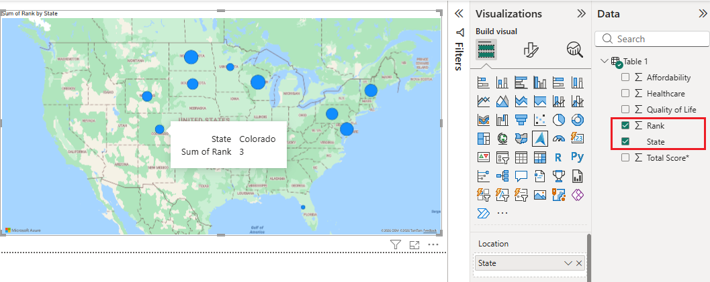

Este manual documenta el proceso de construcción de un cuadro de mando en Power BI, desde la carga de datos hasta la visualización final para análisis de negocio.
El desarrollo se ha realizado siguiendo el flujo estándar de BI dividido en cuatro fases principales.
Se ha utilizado el conector Obtener datos > Excel para importar el archivo facilitado para la práctica.

Desde Transformar datos se abrió el Editor de Power Query para revisar tipos de datos, eliminar columnas innecesarias y tratar valores nulos mediante un proceso ETL reproducible.

Con los datos limpios, se validaron en la vista Modelo las relaciones entre tablas de hechos y dimensiones, priorizando cardinalidades 1:N y preparando medidas para el análisis.

Se configuró el lienzo del informe para representar los indicadores de negocio mediante visualizaciones, ajustando diseño, etiquetas y formato para facilitar la toma de decisiones.

Power Query es el motor de preparación y transformación de datos. Aunque se opera con interfaz gráfica, cada acción genera código en lenguaje M y queda registrada en la lista de Pasos aplicados. Este enfoque permite que la limpieza se ejecute automáticamente cada vez que se actualice el origen, sin repetir trabajo manual.
DAX es el lenguaje de fórmulas para modelado analítico en Power BI. A diferencia de Excel, trabaja con contexto de fila y contexto de filtro sobre tablas completas. En el proyecto se usa para crear Medidas dinámicas (que responden a filtros) y Columnas calculadas (cálculo persistente por fila).
Las visualizaciones son la capa interactiva del informe. Su ventaja principal es el filtrado cruzado (cross-filtering): al seleccionar una categoría en una gráfica, el resto se filtran o destacan automáticamente en el mismo contexto de análisis, habilitando exploración avanzada sin programación adicional.
Fuentes: